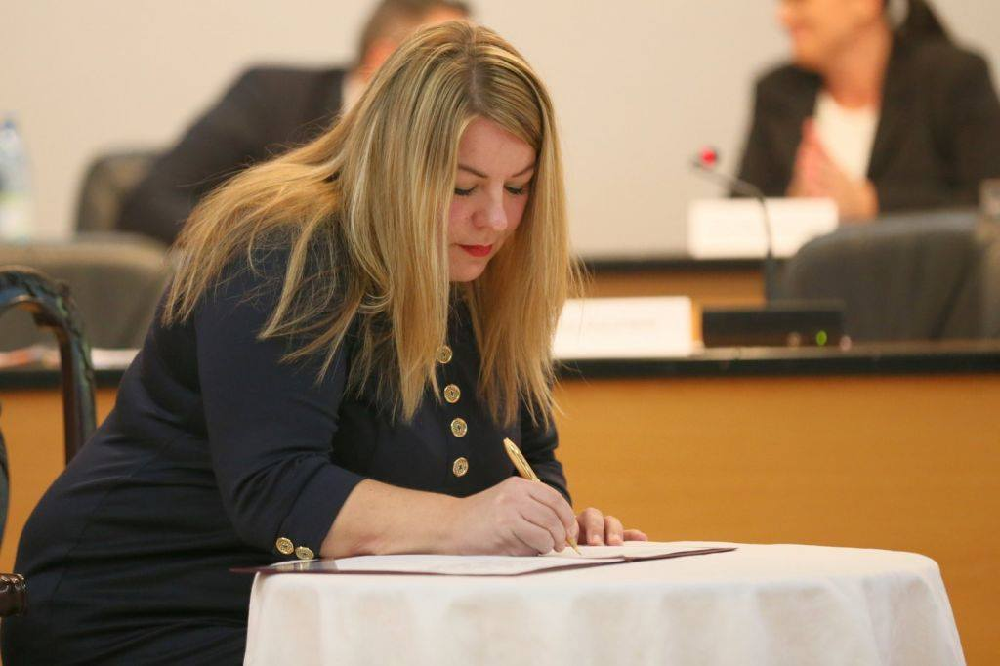
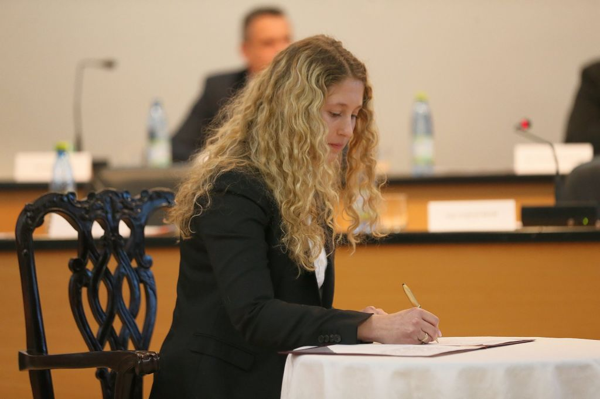
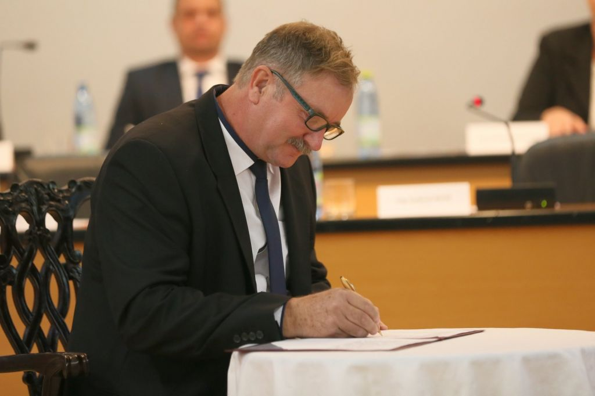
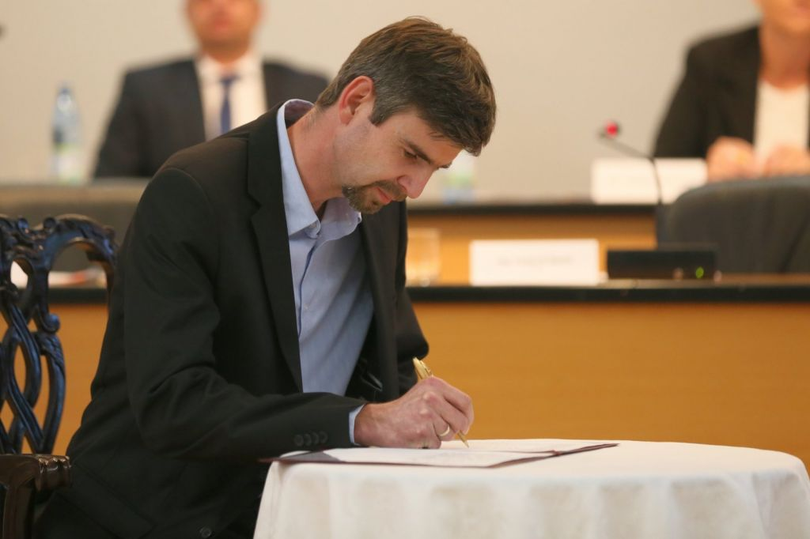
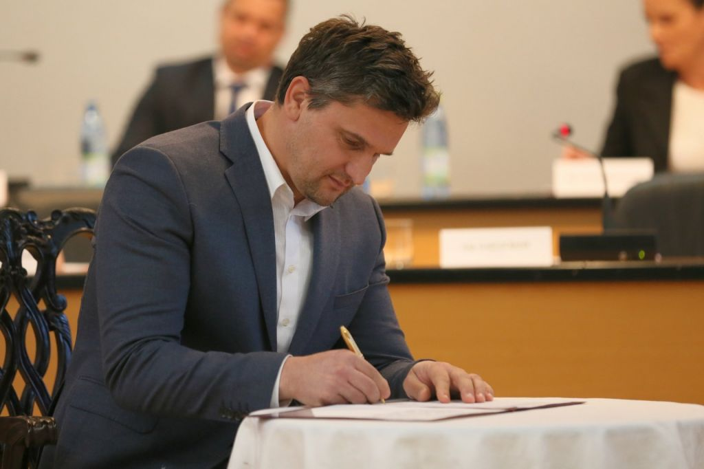
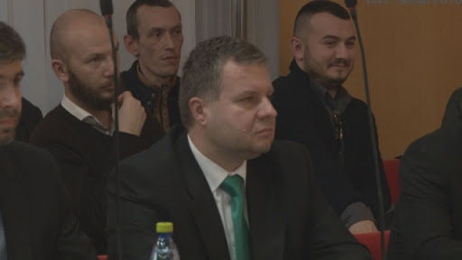

Zástupkiňa primátorky
Hanzalíková Veronika, Mgr., PhD.

Zástupkyňa primátorky
V zmysle ustanovenia § 13b ods. 1 až 3 zákona č. 369/1990 Zb. o obecnom zriadení v znení neskorších predpisov s účinnosťou od 01.04.2016 je poverený výkonom funkcie zástupcu primátora mesta Skalica. Práva a povinnosti vyplývajú z platnej právnej úpravy týkajúcej sa zástupcu primátora mesta a z vnútroorganizačných predpisov mesta Skalica.
V rámci výkonu funkcie zástupcu primátora je oprávnený zastupovať primátora v týchto činnostiach:
- zastupovanie primátora počas jeho neprítomnosti alebo nespôsobilosti na výkon funkcie,
- zvolávanie a vedenie zasadnutia mestského zastupiteľstva a mestskej rady počas neprítomnosti primátora mesta,
- zabezpečovanie prípravy zasadnutí mestského zastupiteľstva po stránke vecnej a obsahovej náplne v súlade s rokovaniami mestskej rady a tiež prípravy zasadnutí mestskej rady,
- spolupráca pri zostavovaní plánu práce mestského zastupiteľstva a mestskej rady,
- spolupráca pri tvorbe uznesení mestskej rady a mestského zastupiteľstva,
- koordinácia práce komisií a vyhodnocovanie ich činnosti, prenášanie úloh na mestský úrad zo zápisníc zo zasadnutí komisií,
- koordinácia spolupráce s orgánmi verejnej správy a mestského zastupiteľstva,
- spolupráca s hlavným kontrolórom mesta v oblasti previerok, kontrol a vybavovaní sťažností na činnosti, ktoré vykonávajú orgány mesta,
- schvaľovanie pracovných a služobných ciest zamestnancom mestského úradu počas neprítomnosti prednostu mestského úradu a poslancom mestského zastupiteľstva v súlade s Vnútornou smernicou o cestovných náhradách a podpisovým poriadkom Mestského úradu v Skalici,
- je oprávnený v majetkovo právnych vzťahoch vykonávať všetky úkony smerujúce k uzavretiu dohôd, nesmie však zmluvy a dohody podpisovať,
- je oprávnený v pracovno právnych vzťahoch zhromažďovať všetky potrebné údaje a podklady, nesmie však pracovné zmluvy a dohody podpisovať,
- zastupovanie mesta v oblasti spoločenskej, kultúrnej, reprezentačnej a to po dohode s primátorom mesta.
Práva a povinnosti vyplývajú z platnej právnej úpravy týkajúcej sa zástupcu primátora mesta a z vnútroorganizačných predpisov mesta Skalica.
Mestské zastupiteľstvo
Mestské zastupiteľstvo vykonáva pôsobnosť podľa zákona o obecnom zriadení, podľa osobitných zákonov, podľa Štatútu Mesta Skalica, všeobecne záväzných nariadení Mesta Skalica a podľa vnútroorganizačných noriem schválených uznesením mestského zastupiteľstva.
Mestská rada:
• Bc. Katarína Chovancová

• Ing. František Kadlečík

• Ing. Martin Kojš

• Ing. Rudolf Šantavý

• Adrián Hertl

Poslanci
1/ Mestské zastupiteľstvo v Skalici je zastupiteľský zbor mesta zložený z poslancov zvolených v priamych voľbách obyvateľmi mesta na štyri roky. Spôsob volieb do mestského zastupiteľstva je upravený v osobitnom právnom predpise.
2/ Mestské zastupiteľstvo v Skalici má 19 poslancov.
3/ Funkčné obdobie poslancov končí zložením sľubu poslancov novozvoleného mestského zastupiteľstva na štyri roky.
Obvod č. 1
| P.č. |
Zvolení poslanci |
email |
Za |
| 1. |
Ing. Miroslav Horňák |
hornak.miroslav@mesto.skalica.sk |
Doma dobre |
| 2. |
Ing. Ľudovít Barát |
barat.ludovit@mesto.skalica.sk |
nezávislý kandidát |
| 3. |
Ing. Rudolf Šantavý |
santavy.rudolf@mesto.skalica.sk |
nezávislý kandidát |
| 4. |
Žigmund Pálffy |
palffy.zigmund@mesto.skalica.sk |
SDKÚ-DS, OKS, SNK, KDH |
Obvod č. 2
| P.č. |
Zvolení poslanci |
email |
Za |
| 1. |
Bc. Katarína Chovancová |
chovancova.katarina@mesto.skalica.sk |
nezávislá kandidátka |
| 2. |
Adrián Hertl |
hertl.adrian@mesto.skalica.sk |
nezávislý kandidát |
| 3. |
MUDr. Jozef Skála |
skala.jozef@mesto.skalica.sk |
nezávislý kandidát |
| 4. |
Mgr. Veronika Hanzalíková, PhD. |
hanzalikova.veronika@mesto.skalica.sk |
nezávislá kandidátka |
Obvod č. 3
| P.č. |
Zvolení poslanci |
email |
Za |
| 1. |
Ing. Jana Rekošová, PhD. |
rekosova.jana@mesto.skalica.sk |
nezávislá kandidátka |
| 2. |
Peter Pagáč |
pagac.peter@mesto.skalica.sk |
nezávislý kandidát |
| 3. |
Ing. Martin Kojš |
kojs.martin@mesto.skalica.sk |
SDKÚ-DS, OKS, SNK, KDH |
Obvod č. 4
| P.č. |
Zvolení poslanci |
email |
Za |
| 1. |
MUDr. Peter Košík |
kosik.peter@mesto.skalica.sk |
nezávislý kandidát |
| 2. |
Ing. Anna Ozábalová |
ozabalova.anna@mesto.skalica.sk |
nezávislá kandidátka |
| 3. |
Ing. Vladislav Horňák |
hornak.vladislav@mesto.skalica.sk |
OĽaNO, SaS, NOVA |
| 4. |
Bc. Ľubica Bučková |
buckova.lubica@mesto.skalica.sk |
OĽaNO, SaS, NOVA |
Obvod č. 5
| P.č. |
Zvolení poslanci |
email |
Za |
| 1. |
Erik Rangl |
rangl.erik@mesto.skalica.sk |
nezávislý kandidát |
| 2. |
Ing. Milan Roman |
roman.milan@mesto.skalica.sk |
SDKÚ-DS, OKS, SNK, KDH |
| 3. |
Ing. František Kadlečík |
kadlecik.frantisek@mesto.skalica.sk |
nezávislý kandidát |
| 4. |
Mgr. Miroslav Lipovský |
lipovsky.miroslav@mesto.skalica.sk |
nezávislý kandidát |